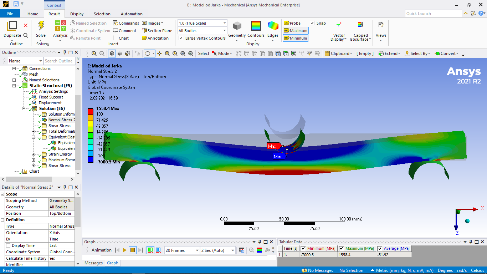
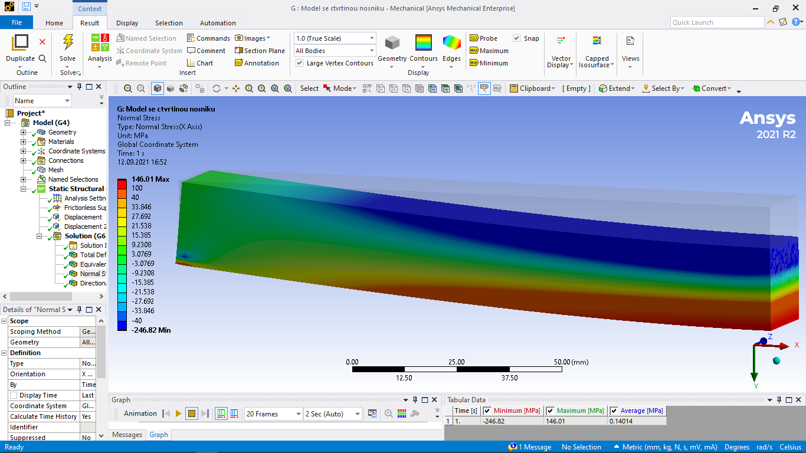

9. Základy teorie elasticity#
9.1. První a druhá impulsová věta.#
9.1.1. Popis posuvného a rotačního pohybu tělesa#
Fyzikální parametry pro popis posuvného pohybu tělesa:
hmotnost tělesa \(m\)
rychlost tělesa \(\vec v\)
hybnost tělesa \(\vec p = m \vec v\)
Fyzikální parametry pro popis rotačního pohybu tělesa:
moment setrvačnosti tělesa \(J\)
úhlová rychlost tělesa \(\vec \omega\)
moment hybnosti tělesa \(\vec L = J \vec \omega\)
9.1.2. Impulsové věty#
Theorem (První impulsová věta)
Časová změna celkové hybnosti tělesa (soustavy) je rovna součtu vnějších sil působících na těleso (soustavu).
\[ \frac{d\vec p}{dt} = \sum \vec F \]
Theorem (Druhá impulsová věta)
Časová změna celkového momentu hybnosti tělesa (soustavy) je rovna celkovému momentu vnějších sil působících na těleso.
\[ \frac{d\vec L}{dt} = \sum \vec M \]
9.1.3. Podmínky rovnováhy#
Theorem (Podmínka statické rovnováhy)
\[\sum \vec F = \sum \vec M = 0\]
9.2. Teorie elasticity#
Deformace, namáhání a Hookův zákon v 1D
Deformace, namáhání a Hookův zákon ve 2D
9.3. Numerické simulace#

